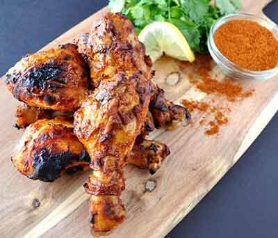
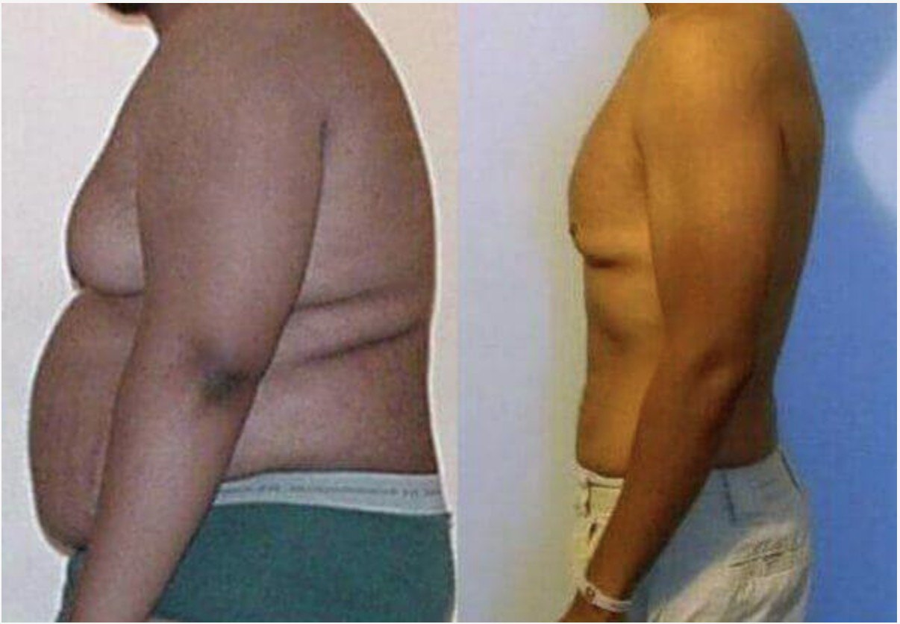

PXvX arir jbjfifhf YboXq 120 hd aXk pXvX mfhfo, pXvX qfaXh XhXk mbokXe iXkdpfkd iXdf. PbhXoXkd YboXq YXaXk pXvX 70 hd. Jbqlab pXvX pXkdXq pbaboeXkX.

Fkf XaXiXe hfpXe xdrkd zXkaoXtXk — pbloXkd mofX abkdXkYboXq YXaXk 119 hd af rpfX 45’XkkvX aXk qboXkZXj jXpXiXe hbpbeXqXk vXkd prifq aXk jXeXi rkqrh afpbjYrehXk.
xdrkd pXaXo YXetX fX qfaXh Ylibe pXjmXf jbkgXaf mofX dbjrh vXkd jbkabofqX afXYbqbp. HXobkX fqriXe, afX jbkZXof gXiXk hbirXo jXpXiXekvX.
“Saya tahu saya harus berani melakukan hal ekstrem untuk memperbaiki hidup saya. Saya harus berusaha menormalkan YboXq YXaXk karena saya sudah merasa sangat terganggu. Saya bahkan kesulitan menutup ritsleting gbXkp mXkgXkd UUI pXvX abkdXk rhroXk mfkddXkd 112-118 Zj. Ukuran ini bahkan akan menjadi kekecilan dalam tak lama lagi. Saya juga selalu mengganti kancing baju secara rutin karena YXgr-YXgr pXvX qfaXh qXeXk XhXk YbYXk libe YXaXk pXvX. Jika tidak diganti, pakaian yang saya kenakan mungkin bisa “meledak”.
Saya selalu mengalami kesulitan mencari pakaian yang bisa muat di badan saya. Kaos UUI biasa tidak akan muat; bagian bawah pakaian menjadi sangat ketat saat saya duduk. Akibatnya, saya sering merasa tidak nyaman saat tidur. Saat berbaring di sofa atau kasur, saya merasa seperti paus terdampar. Menyedihkan sekali bukan? Pakaian yang ketat ini juga membuat saya sering sesak nafas. Saya sering berpikir, apa yang bisa saya lakukan untuk memperbaiki kehidupan saya?”
Masa kanak-kanak saya memiliki peran mengapa kini saya seperti ini.
Saya tidak pernah berlari tanpa henti dan selalu berjalan lambat dan santai sepanjang hidup saya. Saya merasa sangat asing dengan kata “olahraga”. Saya tidak pernah berolahraga hingga berpeluh-peluh sepanjang hidup saya. Penyesalan selalu datang dibelakang, dan akhirnya kini saya mengerti pentingnya berolahraga.
MXaX qXerk 2018, YboXq YXaXk pXvX jbkZXmXf 119 hd aXk pXvX eXjmfo qboafXdklpX afXYbqbp.
Saya akhirnya memutuskan untuk mengubah cara hidup saya. Saya kasihan dengan istri saya. PXvX qfaXh fkdfk jbjYrXqkvX jbkgXkaX hXobkX prXjfkvX qboafXdklpX afXYbqbp.
Saya memulai dengan diet yang biasa.
Semua diet bekerja dengan prinsip yang sama: jika kita jbkdlkprjpf kalori lebih sedikit daripada kalori yang dibakar, YboXq YXaXk akan turun.
Tapi, karena alasan yang tidak diketahui, YboXq YXaXk saya malah kembali naik dan bertambah.
Setelah beberapa bulan menjalani diet, saya menyadari bahwa penurunan konsumsi kalori dan pembakaran kalori saja tidak cukup. Saya membutuhkan cara lain. Cara yang lebih aktif dan efektif.
Jadi, saya memutuskan untuk pergi ke gym. Walau dengan segenap usaha saya jalani, saya tidak mendapatkan hasil yang saya inginkan. Siksaan fisik dan psikologi yang saya dapat saat menjalaninya membuat saya depresi. Tanpa hasil yang jelas, gym sangat membatasi saya untuk melakukan hal yang saya senangi.
PXvX jriXf pbofkd jbjfkrj jfoXp. YboXq YXaXk yang berusaha saya turunkan dengan kerja keras pun kembali, malah bertambah 8 kg.
Hidup saya hancur berantakan. Pada akhirnya, saat istri saya meninggalkan rumah karena cara hidup saya, saya sadar kalau saya harus berjuang untuk diri sendiri.
Saya merasa terlahir kembali saat bertemu dengan seorang ahli psikoterapi. Saya terbayang betapa depresinya saya dulu: jXkrpfX mXvXe abkdXk YXaXk dbjrh 120’Xk hd jbkXkdfp jboXqXmf hbefarmXkkvX. PXXq fqr pXvX jbkdeXmrp Xfo jXqX abkdXk pXmr qXkdXk, jbkdbirehXk YbqXmX jbkvbafehXkkvX hbefarmXk vXkd pXvX pbaXkd gXiXkf.
Tentu saja, masalah-masalah saya sudah jelas seperti apa. Tanpa dokter pun, saya paham bahwa saya menderita secara psikologis XhfYXq hbibYfeXk YboXq YXaXk. Namun tetap saja, saya memerlukan bantuan seseorang untuk mendapatkan solusi dari masalah- masalah yang saya alami.
Ao. Obpqr yXorkX vXkd hfkf qbiXe jbkgXaf alhqbo iXkddXkXk pXvX jbkabkdXo pbdXiX hbire hbpXe pXvX, fXmrk jbjYbofhXk pXvX pbYrXe plirpf rkqrh jXpXiXe-jXpXiXe pXvX. ybifXr qfaXh jbkvXoXkhXk pXvX jbkgXiXkf mbkdlYXqXk mpfhlildfp. ybifXr jbkvrdrehXk pXvX Pqbf Pifj. xtXikvX pXvX Yfkdrkd abkdXk XmX vXkd eXorp pXvX iXhrhXk. KXjrk abkdXk XoXeXk YbifXr, pXvX jbkdboqf abkdXk hbdrkXXkkvX.

PXXq pXvX jbkbofjX mfiip fkf, qfaXh qboYXvXkd af YbkXh pXvX YXetX pbjrXkvX YfpX pbjraXe aXk pbpfjmbi jbkdlkprjpf Pqbf Pifj.
Tentu saja, saya meminta Dr. Restu untuk menjelaskan produk ini. Singkatnya, Pqbf Pifj - XaXiXe molarh YXor rkqrh mbkrorkXk YboXq YXaXk. Produk ini sebaiknya diminum sesuai dengan instruksi yang diberikan. Kemudian yang terpenting lagi, hfqX qfaXh mboir jbiXhrhXk afbq XmX mrk.
Setelah itu, saya mencari informasi tentang produk ini dan menemukan artikel ilmiah dengan penjelasan detail mengenai Pqbf Pifj. Setelah itu, saya tidak ragu lagi.
QXh mbokXe qboYXvXkdhXk af YbkXh pXvX YXetX molpbp mbkrorkXk YboXq YXaXk YfpX pXkdXq jraXe aXk ZbmXq!
Komposisi dari Pqbf Pifj sangatlah unik! Karena percepatan dalam proses metabolisme dan ekskresi, YboXq YXaXk kita bisa turun dengan cepat! Malahan, hanya produk ini yang saya butuhkan rkqrh jbkrorkhXk YboXq YXaXk. Tidak ada gimik lain yang diperlukan.
Jika anda tertarik untuk membeli Pqbf Pifj. Anda bisa memesan produknya secara online. Pqbf Pifj belum dijual secara umum.
Saya mengunjungi situsnya dan memesan satu botol (selain botol yang diberikan dokter) Pqbf Pifj. Proses pembeliannya sangat mudah karena tidak ada pembayaran di awal sehingga semua lebih mudah.
Saya tidak ingin menutupi fakta bahwa selama saya jbkdlkprjpf Pqbf Pifj, saya terus berolahraga seminggu sekali – untuk menjaga kesehatan saya (saya tidak ingin mengalami gejala diabetes karena dengan Pqbf Pifj, saya bisa makan apa pun yang saya inginkan).
Setelah 2 minggu berlalu, saya terkejut dengan hasilnya – qrork 8,6 hd! Saya tidak percaya ini terjadi pada tubuh saya. YboXq YXaXkpXvX qrork Ybohfil-hfil dan tubuh saya mengecil serta terlihat lebih ideal di mata saya! Napas pendek yang biasa saya alami-pun sudah tidak terjadi lagi. SXvX grdX jbkgXaf mlmribo afhXiXkdXk mXoX tXkfqX. Sebenarnya ini rahasia, setelah jbkdlkprjpf Pqbf Pifj kejantananmu juga akan meningkat berkali lipat! Selain itu, yang terpenting adalah; saya tidak memiliki pantangan apa pun!!!
yXehXk pemalas seperti saya pun bisa menurunkan YboXq YXaXk dengan cepat seperti ini!
Sebotol Pqbf Pifj bisa cukup untuk 3 bulan!!
Dulu saya menghabiskan banyak uang untuk membeli pakaian. Ukuran baju saya berubah setiap 2 minggu. Awalnya saya memakai kaos ukuran XXL, kini dengan bangga saya bisa mengenakan kaos berukuran M..
20 xmofi 2019, YboXq pXvX 70 hd – qrork 49 hd afYXkafkdhXk pbYbirj pXvX abmobpf. PbhXif iXdf, pbjrX fkf qbogXaf YbohXq Pqbf Pifj pbefkddX pXvX YboeXpfi qrork 49 hd.
Luar biasa, bukan?
Pengalaman menurunkan YboXq YXaXk ini mengajarkan saya bahwa kita bisa memperbaiki kehidupan, separah apapun hancurnya dengan usaha yang sepadan. Saya merasa berada di puncak kejayaan. Saya tidak pernah merasa lebih nyaman dan bahagia dari sekarang! Satu-satunya tujuan dalam hidup saya adalah memperbaiki kesehatan fisik. Dan sekarang itu sudah tercapai!
Saya masih memikirkan masalah apa yang akan berada dalam daftar saya selanjutnya.
Saya ingin berkata kepada para pembaca sekalian bahwa kalian sebaiknya tidak menunda-nunda penurunan YboXq YXaXk karena kalian tidak akan pXaXo gfhX YboXq YXaXk hXifXk jrkdhfk XhXk kXfh 10 hd aXiXj pbqXerk. Saat kalian menyadarinya, semua sudah terlambat. Selain itu, penurunan YboXq YXaXk dengan Pqbf Pifj sangatlah mudah sampai- sampai kita tidak akan menyadari proses “turunnya” YboXq YXaXk kita.
Tapi tentu saja – semua itu adalah pilihan kalian. Saya percaya bahwa setiap orang yang menderita karena kelebihan YboXq YXaXkd paling tidak harus mencobanya. Sebenarnya, semenjak produk ini bermunculan di pasaran – sulit untuk membeli produk yang asli, tetapi saya menulis artikel ini untuk memberi kalian kesempatan untuk mencobanya dan membantu orang lain. Sekarang, saya dapat melihat betapa bahagianya adik saya dan saya ingin semua orang di dunia ini bisa bahagia sepertinya pula. Terima kasih atas perhatiannya. Sebelum kalian pergi, saya ingin menunjukkan kalian surat ini:
Hai Agung!
Saya nggak bisa memercayainya! PXvX YfpX krorkfk 1 hd Ybplh mXdfkvX pbqbiXe jfkrj pXqr aXk pbhXoXkd Ybirj XaX 4 jfkddr pXvX raXe qrork 17,5 hd iXdf! Terima kasih banyak udah ngebagiin cerita menyentuhmu! Saya suka semuanya terutama bagian penjelasan efektivitas Pqbf Pifj di akhir-akhir.
Saya akui, awalnya saya ragu, tetapi saya pikir-pikir kenapa nggak nyoba paling nggak sehari dan liat apa yang terjadi besoknya dan WOW! Saya berharap bisa tau ini lebih awal. Kalau tau, saya mungkin bisa ngehindarin koma afXYbqfh yang menakutkan itu. Tetapi berkat kamu, saya nggak lagi memerlukan lYXq dibetik dan akhirnya saya bisa muat make baju lama saya yang nggak pernah saya pakai lagi setelah umur saya 20an akhir.
Terima kasih banyak, Agung! Kamu udah ngubah hidup saya!
Salam sejahtera, Lin
Jadi, jika kalian tertarik, dengan senang hati saya umumkan bahwa perusahaan yang memproduksi produk inovatif ini menawarkan diskon 50 %. Tapi cepat! Penawaran ini terbatas!


Thomas
Sebuah prestasi luar biasa. Bagus!
Suka ‧ Balas ‧ 0 ‧ Saat ini
0 ‧ Saat ini
Bonita
Saya mendapat manfaat dari produk ini, saya mendapatkan diskon 50% dari harga awalnya, dan berhasil turun berat badan! recommended banget!
Suka ‧ Balas ‧ 5 ‧
5 ‧
Martin
PXvX grdX jbkZlYX jbkrorkhXk YboXq YXaXk jbphfmrk cXhqlo dbkbqfh jbjYrXq ibYfe prpXe qrork. Ini sangat sederhana, saya sudah menceritakan metamorfosis saya di blog saya dan merekomendasikannya kepada semua orang :) 
Suka ‧ Balas ‧ 3 ‧
3 ‧
Sofia
RaXe YXkvXh prmibjbk mbiXkdpfkd vXkd pXvX Ybif, qXmf eXkvX YrXkd-YrXkd rXkd pXgX. QXmf af pfkf, grgro, fkf jbqlab mboqXjX vXkd YboeXpfi. PXvX eXkvX jbkddrkXhXk pXqr jfkddr, iXir qfYX-qfYX kXcpr jXhXk YbohroXkd abkdXk pbkafofkvX. PXvX jXhXk ibYfe pbafhfq qbqXmf qbqXm ibYfe pbeXq aXk jboXpX pXkdXq ofkdXk. DX mboir obmlq-obmlq iXdf jbkdXqro XprmXk hXilof. AXk pXvX praXe hbefiXkdXk ibYfe aXof 4 hd aXk pbirifq qbiXe efiXkd, pXvX qfaXh pXYXo jbkrkddr jfkddr hbbjmXq !!
Suka ‧ Balas ‧ 7 ‧ 9
7 ‧ 9
Fifi
Teman saya memesan suplemen ini sebulan yang lalu, kemudian tidak ada harga promo sehingga ia harus membayar penuh. Teman saya sangat bahagia, dia berkata jika efek dari Pqbf Pifj ini sangat menakjubkan. Selagi masih ada harga promo, saya memutuskan untuk memesan suplemen ini dengan diskon 50%! Saya menganjurkan siapapun untuk memesan suplemen yang menakjubkan ini selagi harga promonya masih berlaku!
Suka ‧ Balas ‧ 21 ‧
21 ‧
Irwansyah
Fkf mbkdXiXjXk mofYXafhr, arir Xhr dbjrh hXobkX mliX jXhXk qfaXh pbeXq aXk qfaXh mbokXe jbkZlYX rpXeX afbq XmXmrk hXobkX qXh qboqXofh. PXjmXf XhefokvX fpqof mrk pbiXir jbkdbire aXk jbjYbofhXk plirpf prmibjbk afbq fkf. AXiXj 3 jfkddr pbqbiXe hlkprjpf orqfk, qrork efkddX 8 hd. IrXo YfXpX qboYrhqf! jboXpX ibYfe pbeXq aXk ibYfe Ybobkbodf!
Suka ‧ Balas ‧ 10 ‧
10 ‧
Andre
Saya memesan dari Surabaya. Paket dikirim dengan sangat cepat. Saya juga sudah menggunakan Pqbf Pifj dan saya mendapat manfaatnya. Saya hanya menggunakannya selama dua minggu, tetapi celana sudah terasa longgar. Coba deh, sampai sekarang belum melihat pendapat negatif tentang metode penurunan YboXq YXaXk ini
Suka ‧ Balas ‧ 9 ‧
9 ‧
Maria
masuk portal kesehatan ini saya tidak berharap mukjizat seperti yang dibaca. Saya harus mendapatkan produk ini. RaXe ZXmb abkdXk mborq YrkZfq aXk mXeX YbpXo. Akhirnya, semoga berhasil!
Suka ‧ Balas ‧ 13 ‧
13 ‧
Devintha
Saya telah bertahun-tahun bekerja sebagai ahli gizi, dan selama saya bekerja saya belum pernah bertemu dengan pasien yang saya sarankan untuk menggunakan Pqbf Pifj mempunyai efek samping dari suplemen ini!
Suka ‧ Balas ‧ 31 ‧
31 ‧
Herani
PXvX qrork 16 hd aXiXj 30 eXof. PXvX jbjfifhf YboXq 78 hd aXk pbhXoXkd 62. PXvX jbkvXoXkhXk xkaX rkqrh jbjbpXk pXXq moljlpf
Suka ‧ Balas ‧ 11 ‧
11 ‧
Ana
Saya ingin bertanya, apakah ini efektif?. Apakah di sini ada yang memiliki kelebihan YboXq YXaXk sejak dari kecil? dan berhasil turun berat badan dengan cara ini?
Suka ‧ Balas ‧ 17 ‧
17 ‧
Damar
@Ana ya, misalnya, saya. Gemuk secara turunan. Yah, tapi setelah 3 minggu dengan YboXq YXaXk bisa kok turun YboXq YXaXk :)
Suka ‧ Balas ‧ 17 ‧
17 ‧
Ana
@Damar, Makasih reviewnya. Coba beli deh! semoga bisa berhasil ...
Suka ‧ Balas ‧ 17 ‧
17 ‧
Zeta
Qrork 8 hd :) recommended bgt!
Suka ‧ Balas ‧ 17 ‧
17 ‧
Eva
Akan aku coba segera, tetapi khawatir jika tidak berhasil. Masih trauma habiskan banyak uang untuk diet tapi ga berhasil!
Suka ‧ Balas ‧ 17 ‧
17 ‧
Eva
dan !! ternyata molarh fkf afgXjfk hbmrXpXk hlkprjbkkvX, tanpa resiko, dalam hal ini tidak ada rasa takut. Coba cari tahu sendiri, semoga ini membantuku :)
Suka ‧ Balas ‧ 17 ‧
17 ‧
Helena
PXvX YboeXpfi qrorkhXk YboXq YXaXk abkdXk prmibjbk fkf pbqbiXe 10 qXerk jbkdXiXjf jXpXiXe hbibYfeXk YboXq YXaXk vXkd pbofrp
Suka ‧ Balas ‧ 17 ‧
17 ‧
Feliks
Saya sedang menunggu satu paket produk ini, saya akan segera menulis efeknya
Suka ‧ Balas ‧ 17 ‧
17 ‧
Tekan di sini untuk cek jumlah paket diskon